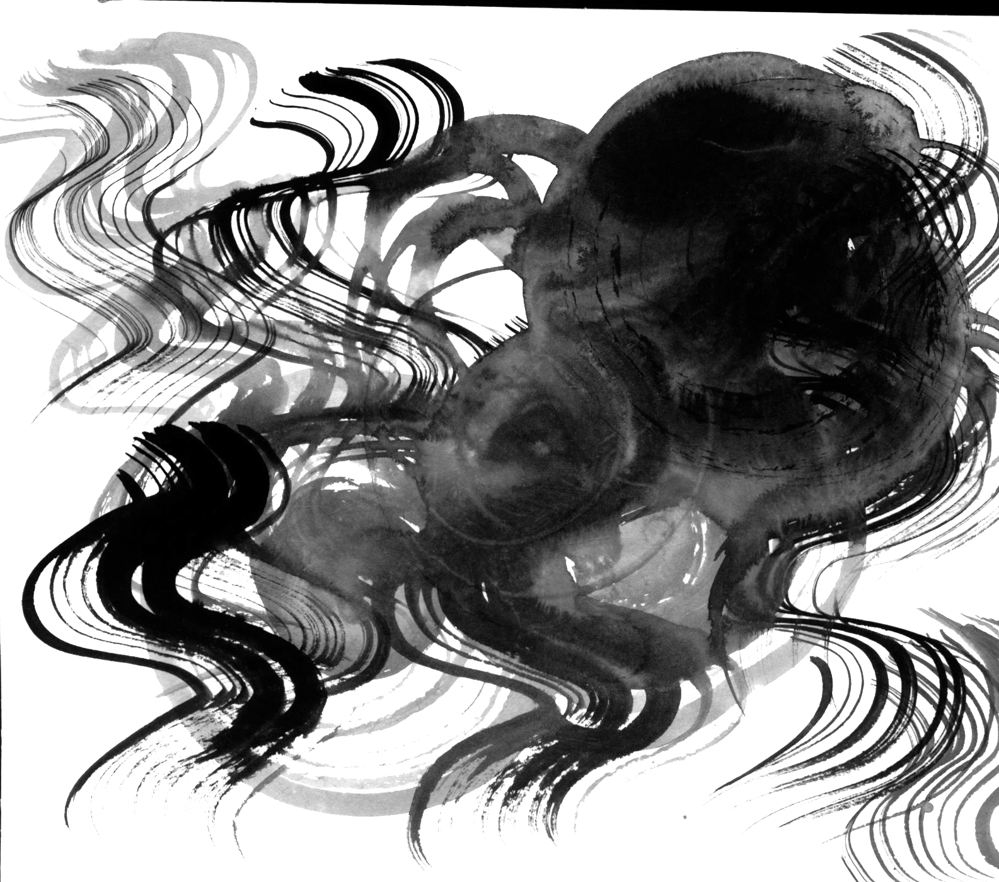

The light from the garden steals in but dimly through paper-paneled doors, and it is precisely this indirect light that makes for us the charm of a room. We do our walls in neutral colors so that the sad, fragile, dying rays can sink into absolute repose. The storehouse, kitchen, hallways, and such may have a glossy finish, but the walls of the sitting room will almost always be of day textured with fine sand. A luster here would destroy the soft fragile beauty of the feeble light. We delight in the mere sight of the delicate glow of fading rays clinging to the surface of a dusky wall, there to live out what little life remains to them. We never tire of the sight, for to us this pale glow and these dim shadows far surpass any ornament. And so, as we must if we are not to disturb the glow, we finish the walls with sand in a single neutral color. The hue may differ from room to room, but the degree of difference will be ever so slight; not so much a difference in color as in shade, a difference that will seem to exist only in the mood of the viewer. And from these delicate differences in the hue of the walls, the shadows in each room take on a tinge peculiarly their own.
Of course the Japanese room does have its picture alcove, and in it a hanging scroll and a flower arrangement. But the scroll and the flowers serve not as ornament but rather to give depth to the shadows. We value a scroll above all for the way it blends with the walls of the alcove, and thus we consider the mounting quite as important as the calligraphy or painting. Even the greatest masterpiece will lose its worth as a scroll if it fails to blend with the alcove, while a work of no particular distinction may blend beautifully with the room and set off to unexpected advantage both itself and its surroundings. Wherein lies the power of an otherwise ordinary work to produce such an effect?